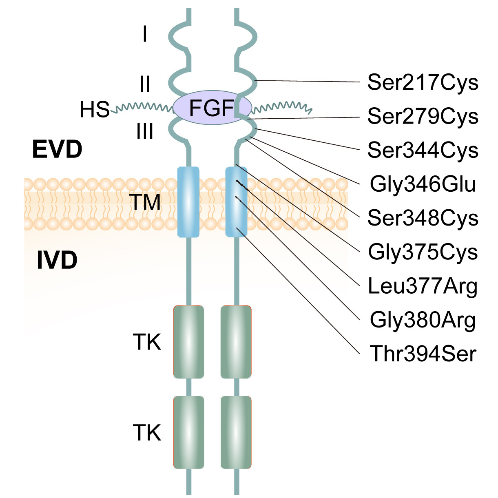
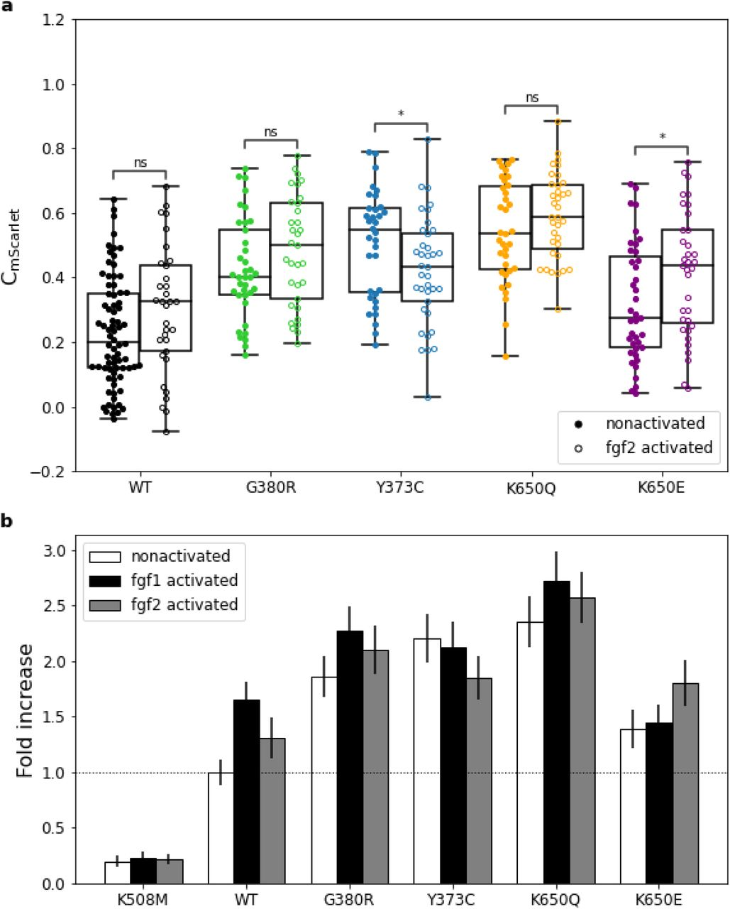
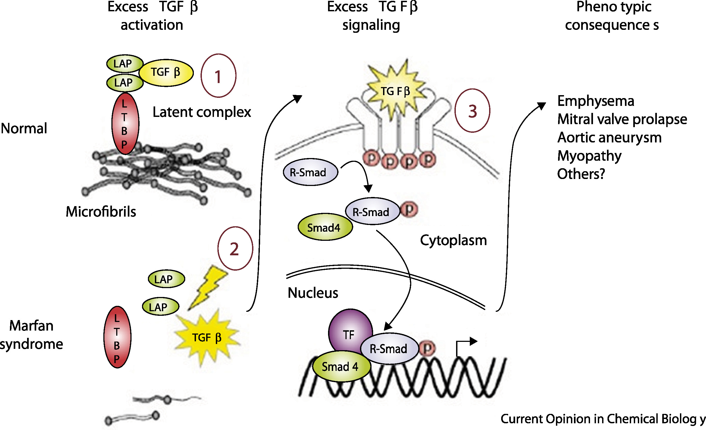

BSMS205 · Genetics
Additive and
Chapter 14 · Part III · Complex Traits
Welcome to Chapter fourteen of BSMS two oh five Genetics. Today we begin Part Three of the course — Complex Traits. Up to this point we have spent our time on individual variants. Single nucleotide changes, indels, structural variants. Each one studied in isolation. But real human traits — height, weight, blood pressure, body mass — are almost never the result of one variant. They are the result of many variants, working together. So today we ask the foundational question of complex traits: when many alleles combine, how do their effects add up? Let's begin.
A question to start with
One mutation,thousands ?
Here is the question I want you to hold throughout this lecture. When you look at a person's height — their actual height, in centimeters — what determined it? Was it one big mutation that flipped a switch? Or was it the cumulative effect of thousands of tiny variants, each nudging the dial up or down? It turns out the answer depends on which person you are looking at. For most people, it is thousands. For a few people with rare genetic disorders, it is one. Today we will understand both extremes and the rule that governs them.
Where we are in the course
Part I & II
Single variants · how each one worksSNVs, indels, structural variants
One mutation → one effect
Part III · today
Many variants combined How alleles add up across loci
The path to polygenic traits
Let's locate ourselves. In Parts One and Two, we covered single variants — single nucleotide changes, small indels, and large structural variants. The lens was always one mutation, one effect. Today opens Part Three, where we change lenses entirely. Now we ask what happens when many variants combine. How do their effects stack? Do they add together cleanly, or does one dominate the others? That question is the foundation of every complex trait — height, weight, blood pressure, even disease risk. So today is the bridge from the world of single variants to the world of polygenic traits.
The two ways alleles combine
Dominant · light switchAdditive · dimmer switch
Here is the headline image of today's lecture. Think of two kinds of switches. A light switch — flip it once, and the room is fully on. That is a dominant allele. One copy of the mutant version is enough to produce the full effect. Then there is a dimmer switch — you turn it a little, you get a little change. Turn it a lot, you get a lot of change. That is an additive allele. Each copy contributes a small effect, and the total effect is the sum. Dominant or additive — these are the two fundamental modes by which alleles combine to shape a trait.
Today's example · human height
Universally relatable · everyone has a height
Easy to measure in centimeters
Shows both modes of inheritance
Some people: one dominant mutation
Most people: thousands of additive variants
We will use height as our running example for the entire lecture. Why height? Three reasons. First, it is universal — everyone has a height, and you can immediately compare. Second, it is easy to measure — a number in centimeters. Third, and most importantly, height shows both modes of inheritance side by side. A small fraction of people have a single dominant mutation that drastically changes their height — we will look at two such conditions. The vast majority of people have their height determined by thousands of additive variants. So one trait, two genetic architectures. Perfect for our purposes.
Roadmap for today
Genotypes & how alleles combine
Dominant alleles · achondroplasia & FGFR3
Dominant alleles · Marfan & FBN1
Additive alleles · normal height variation
Comparing the two architectures
Summary & what comes next
Here is how today will go. First, we set up the basic vocabulary — genotypes, the two modes of allele combination, and what each one means mathematically. Second and third, we look at two dramatic dominant disorders that affect height in opposite directions: achondroplasia, which makes people much shorter, and Marfan syndrome, which makes people much taller. Both involve a single dominant mutation. Fourth, we shift gears and look at how height is normally inherited — additively, across thousands of loci. Fifth, we put dominant and additive side by side and contrast them. Then we wrap up. Let's go.
§ 1
How Alleles
Before we look at any disease or any data, we need a shared vocabulary. What is an allele? What is a genotype? And what are the two ways those genotypes can produce a phenotype? Five minutes of vocabulary, then we move to the real biology.
Three possible genotypes per locus
AA · Aa · aa
two copies · three combinations
A = one allele varianta = the other allele variantYou inherit one copy from each parent
Three possible pairings at each locus
Let's start with the basics. At every gene locus on an autosome, you carry two copies — one from your mother, one from your father. If we call the two possible variants of an allele big A and little a, then there are exactly three ways those copies can pair up. You can be big A big A — homozygous for one variant. You can be big A little a — heterozygous, one copy of each. Or you can be little a little a — homozygous for the other variant. Three genotypes per locus. This is the basic unit on which all inheritance models are built.
Mode 1 · additive · dimmer switch
AA → effect = a + a · Aa → a + 0 · aa → 0 + 0
Each A copy adds a fixed effect
Heterozygote sits halfway between
Phenotype scales with copy number
Mode one — additive. Here, each copy of the A allele contributes the same fixed effect, and the total phenotype is just the sum of those contributions. So if A adds zero point two centimeters per copy, then big A big A gets you zero point four centimeters. Big A little a — one copy — gets you zero point two. Little a little a — zero. The heterozygote sits exactly halfway between the two homozygotes. Dose matters. Two copies do twice what one copy does. That is the essence of an additive allele.
Mode 2 · dominant · light switch
AA → full effect · Aa → full effect · aa → no effect
Presence of even one A triggers the full phenotype
Heterozygote = homozygote
The normal copy cannot compensate
Mode two — dominant. Here, the rules change. One copy of A is enough to produce the full effect. Two copies do not produce more — it is already maxed out. So big A big A and big A little a give you the same phenotype, while only little a little a is unaffected. The key feature is that even when you have a normal copy alongside the dominant allele, that normal copy cannot rescue you. The mutant signal overrides whatever the normal copy is doing. That is why we call it dominant — it dominates over the other allele.
Other modes you'll meet later
Co-dominance — both alleles expressed (e.g., AB blood type)Partial dominance — heterozygote between, but not centeredRecessive — only aa shows the phenotype
Today we focus on the two dominant casesadditive vs dominant .
For completeness — there are intermediate modes. Co-dominance is when both alleles are expressed simultaneously, which is what gives you AB blood type. Partial or incomplete dominance is when the heterozygote sits between the two homozygotes, but not exactly in the middle. And recessive inheritance is the mirror of dominant — only the homozygous mutant shows the phenotype. We will visit these in later chapters. Today, the focus is the two architectures most relevant for complex traits — additive and dominant — because between them, they explain the vast majority of how human traits are inherited.
§ 2
Dominant ·
Now to our first concrete example of a dominant allele. Achondroplasia — the most common form of dwarfism. One mutation in one gene, and adult stature is dramatically reduced. We will see why one copy is enough.
Achondroplasia by the numbers
1 in 15–25k
live births worldwide
Adult male ≈ 131 cm (4 ft 4 in)
Adult female ≈ 124 cm (4 ft 1 in)
Population avg ≈ 175 / 162 cm
~80% are de novo mutations
Achondroplasia affects roughly one in fifteen to twenty-five thousand newborns — common enough that you have probably met someone with it. The signature feature is short stature. Adult males with achondroplasia average around one hundred thirty-one centimeters — about four foot four. Adult females average around one hundred twenty-four centimeters — about four foot one. Compare those numbers to typical population averages of around one hundred seventy-five for men and one hundred sixty-two for women. Notably, about eighty percent of cases are de novo — the mutation is brand new in that individual, and the parents have completely normal stature.
The body proportions
Average-sized torso · trunk length is normalShort arms & legs · upper limbs especially shortened (rhizomelia)Larger head with prominent forehead (macrocephaly)
Short fingers · "trident" hand
Limited elbow extension
It is not just shorter overall — it is a specific pattern. The trunk grows normally, but the arms and legs are short. And within the limbs, the proximal segments — upper arms and thighs — are most affected. Doctors call this rhizomelia, meaning root-limb shortening. The head tends to be larger than average, with a prominent forehead. Fingers are short, and sometimes the middle and ring fingers spread apart, giving the hand a so-called trident appearance. Elbows often cannot fully straighten. So the phenotype is structured — it is not random shortening, it tracks specific bone-development patterns.
The same mutation in nearly everyone
FGFR3
chromosome 4 · short arm
Receptor on cartilage cells (chondrocytes)
One amino acid swap: p.Gly380Arg
Same change in nearly every patient
Worldwide · across all populations
The gene responsible is FGFR three — Fibroblast Growth Factor Receptor three — sitting on the short arm of chromosome four. It encodes a receptor protein on cartilage cells in the growth plates of long bones. And here is the remarkable part. Nearly every person with achondroplasia carries the exact same mutation. A single amino acid swap — glycine to arginine at position three eighty. Written as p dot Gly three eighty Arg. The same mutation, the same nucleotide change, found in patients across every continent and every population. It is like finding the same typo in books printed in different languages.
Where the mutation sits on the receptor

Figure 1. FGFR3 spans the cell membrane. The G380R mutation sits in the transmembrane (TM) domain, where most achondroplasia mutations cluster. Sobreira et al. 2024.
Here is the receptor itself. FGFR three spans the cell membrane. Outside the cell, you see three immunoglobulin-like domains that bind growth factors. Inside, two tyrosine kinase domains that send signals when the receptor activates. Connecting them is a single transmembrane segment — and that is where G three eighty R lives. Most achondroplasia mutations cluster in this same region. Why this matters: the transmembrane domain is the part of the receptor that determines how two receptor molecules pair up. Change one amino acid here, and you change how the receptor turns on. That is exactly what happens in achondroplasia.
Why this mutation is destructive
FGFR3 normally brakes bone growth
Activates only when growth factor binds
G380R : receptor dimerizes without ligandStuck in "ON" → constantly suppresses chondrocytes
Like a car alarm that fires
Now the mechanism. Normally, FGFR three acts as a brake on bone growth. When growth factor binds, two receptors come together, activate each other, and tell cartilage cells: slow down. This is healthy regulation — you do not want bones growing forever. The G three eighty R mutation breaks this. Glycine is small and flexible; arginine is large and bulky. With the bigger residue stuck in the membrane, the two receptors pair up even when no growth factor is present. The receptor is constitutively active — stuck in the on position. Constantly braking the growth plates. Like a car alarm that goes off even when no one is trying to break in.
The signal is hyperactive

Figure 2. Even without added growth factor, the G380R variant activates downstream signaling — the wild-type receptor does not. This ligand-independent activation is why one copy is enough. Hartl et al. 2022, bioRxiv .
Here is the experimental evidence that the receptor is stuck on. The bars show how strongly different FGFR three variants activate downstream signaling — measured through GRB two recruitment, an adaptor protein. Higher bars mean more signal. Look at G three eighty R: even without adding any FGF ligand, it lights up. The wild-type receptor in the same condition stays quiet — it needs ligand to activate. So the mutant receptor is signaling all by itself, all the time. That ligand-independent activity is the molecular reason a single mutant copy is enough to cause the disease.
Why one copy is enough
One mutant FGFR3 is constantly signaling
The normal copy is regulated normally
Mutant signal overrides the brake-release
Net result: chondrocytes always slowed down
Achondroplasia = dominant allele .
So why is achondroplasia dominant? You have two FGFR three genes — one mutant, one normal. The normal one is regulated correctly: it activates only when growth factor binds, and then only briefly. The mutant one, by contrast, is constitutively active — it never turns off. That constant signal overrides the carefully timed pulses from the normal copy. The chondrocytes spend their lives being told to slow down, regardless of whether they should. Penetrance is essentially complete — virtually everyone who carries the mutation shows the phenotype. That is the textbook signature of a dominant allele.
§ 3
Dominant ·
Now the mirror image. Another dominant disorder — this time pushing height in the opposite direction. Marfan syndrome makes people much taller, not shorter, and it does so through a completely different molecular logic.
Marfan by the numbers
> 190 cm
adult males (≈ 6 ft 3 in)
Adult females ≈ 175–180 cm
Long, slender limbs & fingers
Arachnodactyly · "spider fingers"Lens dislocation in the eye
Risk of aortic aneurysm
Marfan syndrome is an autosomal dominant disorder of connective tissue. Adult males with Marfan often exceed one hundred ninety centimeters — over six foot three. Females typically reach one hundred seventy-five to one hundred eighty centimeters. But it is not just tallness — it is a whole pattern. Long, slender limbs. Fingers so long that doctors gave them their own term, arachnodactyly, meaning spider fingers. The lens of the eye can slip out of position, called ectopia lentis. And dangerously, the aorta — the body's main artery — is prone to bulging into aneurysms that can rupture. Marfan is more than a height story; it is a whole-tissue scaffolding story.
The genetic culprit · FBN1
FBN1 on chromosome 15Encodes fibrillin-1 · structural microfibril protein
Microfibrils = scaffolding of connective tissue
Strength & elasticity of aorta, ligaments, bone
The gene is FBN one — fibrillin one — sitting on chromosome fifteen. It encodes a structural protein called fibrillin-1, which assembles into long, rope-like microfibrils. Think of these microfibrils as the scaffolding inside connective tissue. They give strength and elasticity to the aortic wall, to the ligaments holding the eye lens in place, to the connective tissue of bones. Wherever your body needs flexible reinforcement, fibrillin-1 microfibrils show up. So mutations in FBN one weaken that scaffolding — and that affects every tissue that depends on it.
One gene · over 1,000 different mutations
Achondroplasia
Same mutation p.Gly380Arg in everyone
Marfan syndrome
> 1,000 different mutationsMissense, nonsense, splice, indel
Often hit EGF-like or 8-cysteine domains
Here is a striking contrast. Achondroplasia is overwhelmingly caused by one specific mutation in nearly every patient. Marfan is the opposite — over one thousand different mutations have been catalogued in FBN one, and they cause the same syndrome. Missense changes, nonsense premature stops, splice errors, small insertions and deletions. Many of them hit the calcium-binding EGF-like domains, or the eight-cysteine domains that give fibrillin-1 its structural integrity. Different mutations, same outcome. That tells you something important: in Marfan, the issue is loss of microfibril function — and many different mutations can damage function.
Why FBN1 mutations make people taller
Fibrillin-1 has a second job : regulating TGF-β
Microfibrils capture & sequester TGF-β
Defective microfibrils → TGF-β escapes
Excess TGF-β drives bone elongation
So how does damaged scaffolding cause tall stature? The answer is that fibrillin-1 has a second job. Beyond providing structure, the microfibrils capture and hold a powerful signaling molecule called TGF-beta — transforming growth factor beta. Normally, TGF-beta is sequestered by microfibrils, kept in check, released only when needed. When fibrillin-1 is defective, TGF-beta escapes. Free TGF-beta over-activates its signaling pathway. And one of the things excess TGF-beta does is drive abnormal growth in connective tissue — including bone elongation. That is why people with Marfan grow long bones beyond normal limits.
TGF-β escapes its leash

Figure 3. Left: healthy microfibrils sequester TGF-β. Right: defective microfibrils release TGF-β, triggering excess Smad signaling and abnormal tissue growth. Coelho et al. 2020, Cell Signal .
Here is the mechanism in one picture. On the left, healthy connective tissue. Fibrillin-1 microfibrils form a tight scaffolding, and TGF-beta sits trapped inside that scaffolding, bound through latency-associated peptide and latent TGF-beta binding protein. The signal is held quiet. On the right, Marfan tissue. The microfibrils are sparse or malformed. TGF-beta is released, binds its receptors, and triggers excessive Smad signaling. That signaling drives the abnormal tissue growth — long bones, weakened aortic wall, drifting eye lens. One protein with two jobs. When the structural job fails, the regulatory job fails too.
Why one bad copy is enough
Half the fibrillin-1 protein is defective
Microfibril scaffolding becomes weak / sparse
Even partial damage releases TGF-β
The normal copy cannot rescue the structure
Marfan = dominant allele .
Why is Marfan dominant? Because fibrillin-1 is a structural protein assembled into multi-protein microfibrils. If half the protein you make is defective, the resulting microfibrils are weak — they incorporate the defective protein and fall apart. Even partial damage to the scaffolding is enough to leak TGF-beta. The normal copy makes good fibrillin, but it cannot prevent the bad copy from destabilizing the structure. So one mutant copy is sufficient. Penetrance is essentially complete. That is the textbook definition of a dominant allele — and notice how different the molecular logic is from achondroplasia, even though both end up dominant.
§ 4
Additive ·
Now we shift gears. The vast majority of people do not have achondroplasia or Marfan. For them, height is not determined by one mutation. It is determined by thousands of small contributors, each adding a tiny effect. This is the additive model — and it is the genetic architecture of essentially all common human traits.
The bell curve of human height
Most people cluster around average
Few at the extremes (very short, very tall)
Smooth continuous distribution
Hallmark of an additive trait
Many small dials adjusting up or down →normal distribution .
If you measure the height of a thousand random adults and plot a histogram, you do not get a flat line. You do not get two peaks. You get a bell curve — most people clustered near average, fewer people at the very tall and very short ends, smooth on either side. That smooth, continuous, bell-shaped distribution is the signature of an additive trait. Imagine thousands of little dials, each adjusting your height a tiny amount up or down. The cumulative sum across all those dials lands you somewhere on the curve. Most people get a roughly balanced mix of dials — they end up near the middle. A few get more up-dials, some get more down-dials. That is how the bell appears.
The 2022 GWAS of height
12,111 independent SNPs foundSpread across 7,209 regions
Cover ~21% of the genome
Almost all are common variants (MAF > 1%)
Yengo et al. 2022, Nature
In twenty twenty-two, a genome-wide association study analyzed five point four million people from many ancestries — the largest GWAS ever done on a single trait. The headline result: twelve thousand one hundred eleven independent single-nucleotide polymorphisms, or SNPs, are associated with height. Those SNPs sit in seven thousand two hundred nine different genomic regions. Together, those regions cover about twenty-one percent of the entire genome. Almost all of them are common variants — meaning they appear in more than one percent of the population. So height is influenced not by one gene, not by ten, not by a hundred, but by thousands of variants spread across about a fifth of your genome.
Same genes · different mutations
FGFR3 and FBN1 show up in the GWAS list
But as common variants with subtle effects
Not the severe rare mutations of achondroplasia / Marfan
Same biology · different magnitude
Here is something elegant. The GWAS list of twelve thousand SNPs includes — guess which genes — FGFR three and FBN one. The very same genes that, when mutated severely, cause achondroplasia and Marfan. But in the general population, common variants in those genes have small effects. They might shift your height by half a centimeter, not by thirty centimeters. Same biology — growth-plate signaling, microfibril structure — but a completely different magnitude. So the genes that produce dramatic dominant disorders also harbor mild common variants that contribute, additively, to normal height variation. The biology is continuous; the genetics is just operating at a different intensity.
Rare variants matter too
Variant class Variance explained Note
Total SNP-based heritability 0.68 ~68% of height variance Low-LD rare variants 0.31 New, independent info High-LD rare variants 0.03 Tag along with common SNPs
Wainschtein et al. 2022, Nat Genet · 25,465 Europeans, whole-genome sequencing
Common variants are not the whole story. A complementary study used whole-genome sequencing on about twenty-five thousand people to estimate the contribution of rare variants — those with frequency below zero point one percent. Total SNP-based heritability of height was estimated at zero point six eight, meaning sixty-eight percent of height variation is genetic. Within that, low-LD rare variants — variants not correlated with nearby common SNPs — explained about thirty-one percent. High-LD rare variants — those tagging along with common SNPs already captured by GWAS — added only three percent. The lesson: low-LD rare variants carry independent information that GWAS cannot easily see. They are often protein-altering and slightly deleterious, but they still contribute additively, not dominantly.
How the additive math works
Height = Σ (per-SNP effect) + environment + noise
One SNP adds +0.2 cm
Another adds −0.15 cm
Another +0.1 cm · another −0.05 cm
Sum across thousands of SNPs → your height
Let's make the math concrete. Imagine you inherit a SNP that pushes height up by zero point two centimeters. You also inherit one that pulls down by zero point one five. Another adds zero point one. Another subtracts zero point zero five. And so on, thousands of times. Your final genetic contribution to height is the algebraic sum of all those tiny pushes and pulls, plus environmental factors like nutrition during childhood, plus some unexplained noise. Each individual SNP barely registers. But add up ten thousand of them, and you have a very real signal. That is the additive model — small effects, summed across many loci.
Why the curve looks Gaussian
Sum of many small independent effects → Central Limit Theorem
Most people: roughly balanced mix of up & down variants
Few people: stacked up-variants → tall tail
Few people: stacked down-variants → short tail
Bell curve = mathematical fingerprintadditive trait .
The bell curve is not a coincidence. It is a mathematical consequence of summing many small independent effects — a result called the Central Limit Theorem. When you sum many independent random nudges, the distribution of the sum tends toward a Gaussian, regardless of what each nudge looks like individually. Most people inherit a roughly balanced mix of up-variants and down-variants — so they cluster near the average. A few inherit unusually many up-variants and end up tall. A few end up short. The bell shape is the mathematical fingerprint of an additive trait, and we will see it again and again in this part of the course.
§ 5
Dominant vs
Time to put everything together. We have looked at three scenarios — achondroplasia, Marfan, and normal height variation. Two are dominant, one is additive. Let's compare them directly and see what the contrast teaches us about complex traits.
The three scenarios
Scenario Mode Loci Effect size
Achondroplasia Dominant 1 (FGFR3) ~ −44 cm vs avg Marfan syndrome Dominant 1 (FBN1) ~ +15 cm vs avg Normal variation Additive ~12,000 SNPs fractions of cm each
Here are our three scenarios in one table. Achondroplasia — dominant, one gene, FGFR three, with an effect of roughly minus forty-four centimeters relative to average male height. Marfan — also dominant, one gene, FBN one, with an effect of plus fifteen or more centimeters. Normal variation — additive, twelve thousand SNPs across the genome, each contributing a fraction of a centimeter. Notice the trade-off. Dominant alleles are individually huge but rare. Additive alleles are individually tiny but everywhere. Different architectures, both shaping the same trait.
Master switches vs committee votes
Dominant
Master switch One copy = full effect
Predictable phenotype
Complete penetrance
Rare in population
Additive
Committee vote Each copy = small contribution
Continuous distribution
Variable penetrance
Common, polygenic
Here is the analogy I want you to leave with. Dominant alleles are master switches. One copy flips, the whole circuit changes. The phenotype is predictable. Penetrance is essentially complete. But these alleles are rare in the population — they cause Mendelian disorders. Additive alleles, by contrast, are committee votes. No single member can change the outcome alone. Each gets a tiny say. The final phenotype depends on the majority across thousands of voters. The distribution is continuous. Penetrance is variable — depends on how many copies you have. And these alleles are common — they are everywhere in everyone's genome. The whole field of complex trait genetics lives in the additive world.
Why most quantitative traits are additive
Strong-effect dominant mutations are selected against
Tiny additive effects evade purifying selection
Continuous traits = sum of many small biological inputs
Evolution favors distributed control
Big-effect alleles are rare
Why is the additive model the rule for most quantitative traits — height, weight, blood pressure, lipid levels? Two reasons. First, big-effect dominant alleles tend to disrupt biology in ways that reduce fitness, so natural selection keeps them rare. They show up as Mendelian disorders precisely because they have not spread. Second, tiny additive effects fly under the radar of selection — too small to be removed individually — so they accumulate. The result is that for most continuous traits, the genetic architecture is highly polygenic, with thousands of small additive contributors. Evolution favors distributed control because distributed control is robust. We will return to this idea throughout Part Three.
§ 6
Summary
Let's pull the threads together.
What to take away
Genotypes AA · Aa · aa · combine in two main modes
Dominant = one copy is enough · achondroplasia (FGFR3), Marfan (FBN1)Additive = each copy adds a small effect · sum across lociHeight GWAS: ~12,000 SNPs · ~68% heritability
Bell curve = mathematical fingerprint of an additive trait
Five takeaways. One — at every locus there are three possible genotypes, big A big A, big A little a, and little a little a, and they combine through two main modes. Two — dominant alleles produce the full phenotype with one copy; achondroplasia from FGFR three and Marfan from FBN one are textbook examples. Three — additive alleles each contribute a small effect, and the phenotype is the sum across many loci. Four — the twenty twenty-two height GWAS identified about twelve thousand SNPs influencing height, and total heritability is around sixty-eight percent. Five — the bell-shaped distribution of human height is a mathematical signature of additive inheritance, predicted by the Central Limit Theorem. Hold those five ideas; everything in Part Three builds on them.
Next lecture
If alleles add up,thousands of them?
Chapter 15 · The Polygenic Model
One question to leave you with. Today we said that most quantitative traits are additive — small effects summed across many loci. We saw that twelve thousand SNPs influence human height. So here is the question for next time. If thousands of alleles each add a small contribution, can we use them to make predictions about a person's trait? Can we compute someone's expected height — or their disease risk — by summing up their genetic dosage across all those loci? That is the polygenic score, and it is the topic of Chapter fifteen. See you next time.